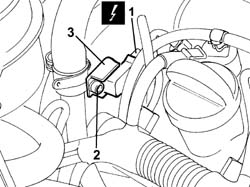
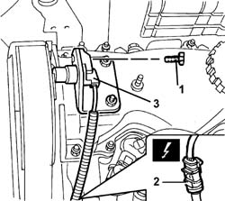
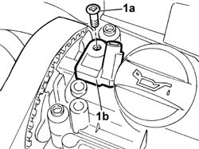

1060G22 CAM ANGLE SENSOR - R R
- Path
- Procedures > 10 ENGINE UNIT > 1060 DIESEL INJECTION SYSTEM > 1060G PRESSURE PUMP ELECTRIC CONTROL > 1060G22 CAM ANGLE SENSOR - R R
- Kind
- repair procedure (removal / refitting; the operation number is the code)
- Applies to
- engines: 2.0 JTD 8V, 2.3 JTD 16V, 2.8 JTD 8V; all production periods
- Interactive page
- https://sloeber94.github.io/elrnDB-fDct/en/#/244000848
Applies to: engines: 2.3 JTD 16V; all production periods
 Removing
Removing
 Refitting
Refitting- Disconnect the negative battery terminal.
- Disconnect the electrical connection for the cam angle sensor.
 | Description | Connector |
|---|---|---|
1 | Timing sensor | K047 |
2. Undo the bolt fixing the cam angle sensor.
3. Remove the cam angle sensor from the seat in the camshaft housing.

Applies to: engines: 2.3 JTD 16V; all production periods
Refitting
Removing- Fit the cam angle sensor in the special seat in the camshaft housing and tighten the fixing bolts.
- Connect the electrical connection for the cam angle sensor.
| Description | Connector |
|---|---|---|
. | Timing sensor | K047 |
- Connect the negative battery terminal.
Applies to: engines: 2.8 JTD 8V; all production periods
Removing
RefittingSee in Op. 1016A10
1. Undo the fixing bolt.
2. Disconnect the electrical connection.
| Description | Connector |
|---|---|---|
2 | Timing sensor | K047 |
3. Remove the sensor.

Applies to: engines: 2.8 JTD 8V; all production periods
Refitting
Removing- Position the sensor.
- Tighten the fixing bolt.
- Connect the electrical connection.
| Description | Connector |
|---|---|---|
. | Timing sensor | K047 |
See in Op. 1016A10
Applies to: engines: 2.0 JTD 8V; all production periods
Removing
Refitting- Disconnect the negative battery terminal.
- Disconnect the electrical connection for the cam angle sensor.
| Description | Connector |
|---|---|---|
. | Timing sensor | K047 |
1. Undo the fixing bolts (1a) and remove the cam angle sensor (1b).

Applies to: engines: 2.0 JTD 8V; all production periods
Refitting
Removing- Position the sensor and tighten the fixing bolt.
- Tighten the sensor fixing bolts to torque.
 | Value - daNm | Fastening | Component | Ø |
|---|---|---|---|---|
. | 0,9 | Bolt | CAM ANGLE SENSOR | M6 |
- Connect the electrical connection.
| Description | Connector |
|---|---|---|
. | Timing sensor | K047 |
- Connect the negative battery terminal.